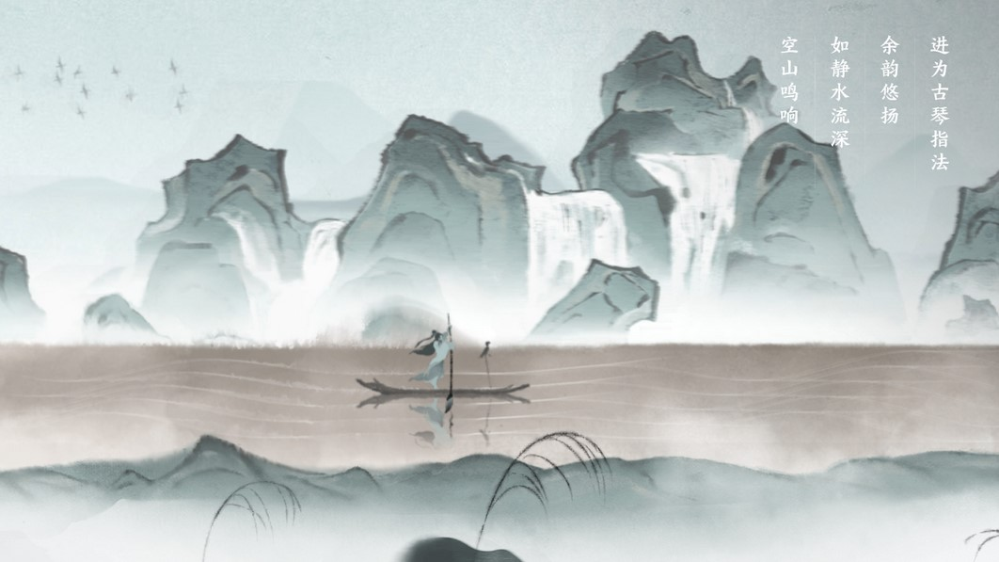
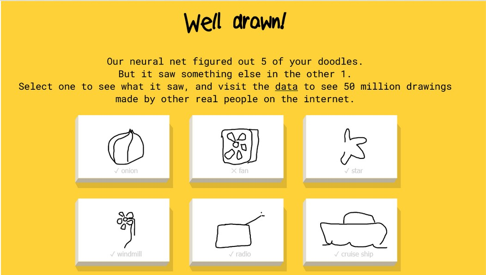
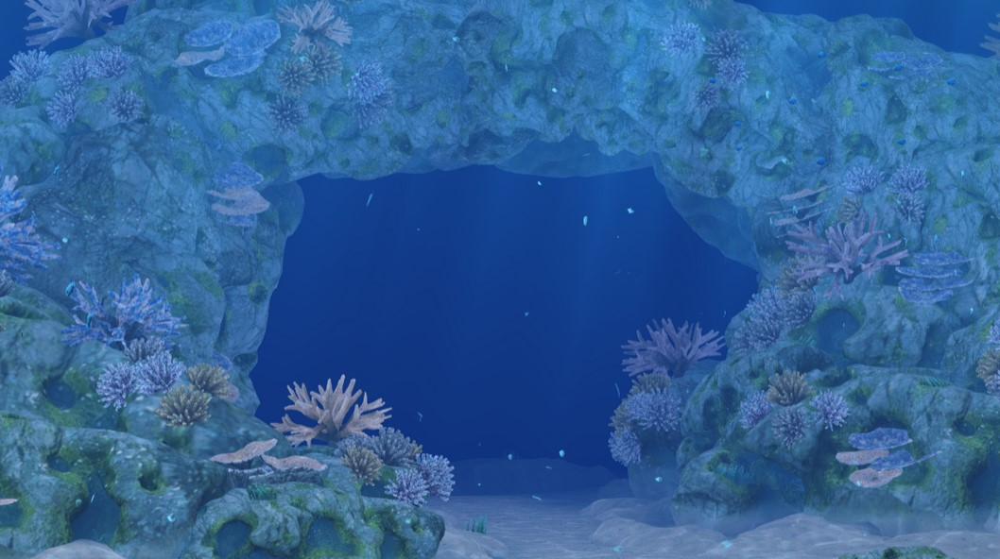

lab 1: getting started
challenge
lab 1 was an introduction to what the term 'programming for the arts' is. i was tasked to dig through various pieces of internet art and games and analyze them.
problems
unfortunately, many websites no longer functioned.
reflection
i was pleasantly surprised by the sheer creativity shown on just a small portion of the internet.
however, i was also disappointed to see the amount of NFT projects that many of these wonderful artists turned to.
who is playing the guqin
Who is playing the Guqin is a music-based interactive story which tells the story of a young individual searching for the source of a beautiful melody. What immediately captured my attention was the game’s heavy stylization, based on ancient Chinese “ink-and-wash” style of painting. As the player would interact with the screen, either through repeated clicking or the moving of the mouse, a story would unfold, and the player character would move ever-closer to the source of the sound. What proved difficult in my understanding of the game was that the entire game was in Chinese, but I was able to replay the game using a translator so I could understand what the game was trying to convey. The art, music, and sound effects made for a relaxing, enjoyable short game.
quick, draw!
Quick, Draw! is a drawing-based game similar to Pictionary, but the player isn’t going against another human–they’ll be up against a specialized AI created by Google, which is tasked with guessing the player’s drawing within twenty seconds. Something I was interested in with Quick, Draw! was the neural net’s learning system and how it came to identify an extremely bad doodle in only seconds; Google provided the answer in the form of millions of other doodles done on the website, which would be fed to the network, thus allowing it to learn and associate doodle patterns with the prompt.
the sea we breathe
The Sea We Breathe is a point-and-click marine adventure that teaches the player about the importance of sustaining our oceans to combat climate change. Players have the opportunity to choose between three different educational paths, each of which educate on the various ways the ocean is crucial to saving our environment.
I was curious to learn about how the ocean maps affect progress in the simulations’ function. Trying to go back to other areas of the map generated new random events, and one time that I reversed a sea turtle appeared! I was enamored with how the animals in the simulation were randomly generated.